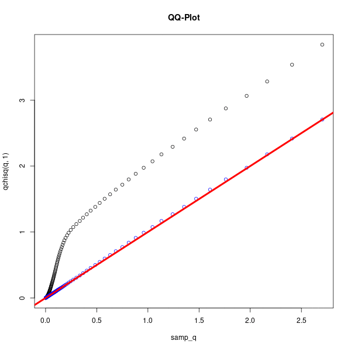

I’m Matias Shedden, a 4th year PhD student in Statistics at the University of Florida, being advised by Dr. Karl Oskar Ekvall. My research centers on inference in boundary settings, particularly within asymptotic likelihood theory and in applications to linear mixed effects models, time series, and the analysis of genetic data.
Contact: sheddenmatias@ufl.edu

On 11/20/25, I gave a talk on my research in the UF Student Seminar Series. The slides can be found here.
Abstract: Uniform inference refers to the process of constructing confidence intervals or hypothesis tests which are uniformly asymptotically valid on compact subsets of the parameter space. Uniform results generally follow from distributional results when the parameters of the distribution are allowed to depend on \(n\). We consider the asymptotic distributions of the Wald and Likelihood Ratio statistics “near” the boundary, in the sense that the sequence of parameters is potentially approaching a boundary point. The assumptions required to produce such distributional results under sequences are stronger than those required when the parameter is fixed. In particular, when the sequence converges fast enough, weaker assumptions involving Local Asymptotic Normality (LAN) around the limit point are sufficient for producing distributional results. Slow rates of convergence require additional assumptions. Consideration of an exactly quadratic likelihood shows that these additional assumptions, as always, ensure that the likelihood function is approximated by a quadratic in a way that yields the desired distributional results. We suggest a simple method for constructing uniformly asymptotically valid confidence intervals based on these distributional results, and a potential application of such a method to situations involving nuisance parameters.
We have a paper in preparation:
M. Shedden and K.O. Ekvall. “Reliable score-based confidence intervals for covariance parameters in linear mixed models”
In addition to the paper, methods are being implemented in the R package reconf , which is integrated with lme4.
Abstract: Uniform inference refers to the process of constructing confidence intervals or hypothesis tests which are uniformly asymptotically valid on compact subsets of the parameter space. Uniform results generally follow from distributional results established under a sequence of parameter values \( \theta_n \). We establish such distributional results for the profile score statistic, evaluated at an unrestricted maximum of the nuisance parameters. We then consider confidence intervals constructed by inverting the profile score statistic, and show that these confidence intervals can be shown to be uniformly asymptotically valid under certain conditions, which we discuss in the case of Linear Mixed Effects models. In particular, our proposed confidence intervals are valid even when the true value of the parameters, including the nuisance parameters, may be at or near the boundary of the parameter set. This provides a reliable method for constructing confidence intervals for a single parameter value, and is particularly valuable when estimates for the parameter values are highly correlated, and we discuss such applications.
I’m currently researching the asymptotics of test statistics under sequences of parameter values which may be approaching the boundary of the parameter set. We explore settings in which the assumptions about the likelihood function could be weakened, and justify the strengthened assumptions. Furthermore, a simple and general method for constructing confidence intervals which are uniformly asymptotically valid and do not rely on simulated quantile values is proposed. Paper is in progress.
My complete course notes for STA 3032 in book form can be found here.
While teaching STA 4322, I covered likelihood asymptotics from the perspective of Geyer, C. J. (2013). This is a simple version of the topics covered in that paper, presented at the undergraduate level. It also includes the connection to the more usual "n going to infinity" perspective that is typically presented. In my opinion, it's a much more intuitive way of understanding these topics that isn't often used, and it doesn't require a CLT!
See the lecture (and references therein) here.
I gave a presentation in STA 7934 (High-Dimensional Time Series, taught by Dr. Sayar Karmakar), in which I found a very interesting overlap between my own research (uniform inference and parameters on the boundary) and the central theme of the class, VAR models. The main reference is Holberg, C. and Ditlevsen, S. (2025). I also draw some analogies to more usual boundary settings and do some analysis using a likelihood ratio test.
See the presentation (and references therein) here.